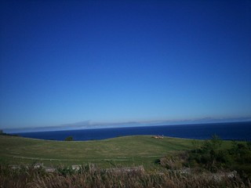
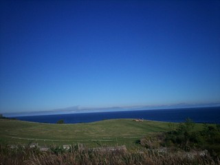

Actualizado el 8 de diciembre
Los elementos de una página web se pueden colocar en diversas posiciones, para ello hay diferentes etiquetas que se ponen después de la propiedad "position".
Los elementos se posicionan en el sitio deseado de la pantalla, utilizando la etiqueta "relative", seguida de las etiquetas top, bottom, left, right...
Por ejemplo la imagen de la mano, esta situada a -10px a la izquierda, para que así parezca que el brazo aparece de la pantalla.

Con esta posición los elementos con la etiqueta "absolute" se sitúan encima de los otros, impidiendo ver lo que hay debajo.
Por ejemplo en esta imagen, el sol tiene posicion absoluta, ya que esta por encima del paisaje, y esta ahí posicionado, gracias a las etiquetas top y left.
 

Con esta posición los elementos se sitúan en un sitio fijo de la pantalla, esto quiere decir que aunque hagamos scroll, se va a seguir viendo el elemento.
Esto se hace poniendo la propiedad "position", seguido de dos puntos y "fixed". Tambien se puede usar esto combinandolo con top, bottom, rigth, left...
Por ejemplo, la imagen del perro, está colocada de manera fija, arriba a la derecha.
Con esta etiqueta los elementos se superponen por importancia, el creador de la página web puede definir que elementos se pueden superponer, esto se hace con la etiqueta "z-index" seguido de un número.
Ese número indica la prioridad de los elementos, los que tengan un número más elevado se van a superponer a los elementos con un número inferior.
Por ejemplo de estas tres imagenes, la de los girasoles tiene el número 1, por lo que se la superpone la del rinoceronte que tiene el número 2 y la del león de 3.